Sage's Legacy
Jump to navigation
Jump to search
Sage's Legacy
Gaining access to Varmundt's Mansion
| Requirements | |
|---|---|
| Base Level: | 130 |
| Starting Point: | |
| Prerequisite(s): | Capturing Elyumina |
| Rewards | |
| Experience: | - (Base) and - (Job) |
| Items: | 5  Varmeal Tickets Varmeal Tickets
|
- Speak with Lucky in Cor at the north eastern area, at the sewage . The entrance has been unlocked.
- Speak with Lucky again to enter the Sewage Treatment Plant. He tells you a colleague might have fell in the sewage water.
- Click on ??????????????? near . The location is marked on your minimap.
- 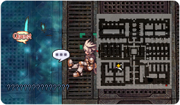
- Bring 1 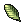 Yggdrasil Leaf and talk to Dew again to save him.
- Go meet Magie on the other map, by entering the portal on the middle left .
- Upon entering the map, Magie will talk to you. You meet with the old crew.
- Meet with Alp at the noth western portal and talk to him. He will warp you to the next area.
- 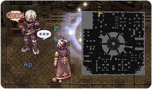
- Once inside, speak with Lacis .
- Speak with Tamarin near the entrance . You need to register as a guest before being able to navigate through the Varmundt's Mansion. You will receive 5 Varmeal Tickets and some experience.
- Speak with Mansion Manager Alpha right above Tamarin , to complete your registration as a guest of Mansion.
You have unlocked the Playing with Pitayas quest.
You have unlocked the Lost in Time instance quest. - Speak with Mansion Manager Alpha again. She tells you there is a problem with the relay network.
You have unlocked the Potato Chips (Eorpa's Request) daily quest.
You have unlocked the Sewage Treatment Plant Cleanup daily quest.
You have unlocked the First Power Plant Cleanup daily quest.
You have unlocked the Checking the Underground Condition quest.
You have unlocked the Silence in the Library! quest.
You have unlocked the Bathroom Monster quest.
You have unlocked the Water Garden quest.
You have unlocked the Dew quest.
You have unlocked the Hidden Flower Garden instance quest. - You can continue the main quest with Relay Network Repairs.


Note: At this point, you have unlocked access to Varmundt's Mansion Garden. If you leave the map and want to go back, you have two options:
- Go ask Nillem in Cat on Bullet pub (Einbroch > walk to > NPC is at ) to warp you back. He will charge 500 zeny each time. The first time you ask him to warp you, he will also give you the Magician's Bell.
- Use the 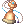 Magician's Bell (given by Nillem or bought in Varmundt's Mansion Garden for 10 000 zeny): Double clicking on it allows you to call Nillem anywhere to ask him to warp you to Varmundt's Mansion Garden, with a 500 zeny fee each time. Please note that the Bell has a 20 minutes cooldown.
Relay Network Repairs
| Requirements | |
|---|---|
| Base Level: | 130 |
| Starting Point: | |
| Prerequisite(s): | Gaining access to Varmundt's Mansion |
| Rewards | |
| Experience: | - (Base) and - (Job) |
| Items: | 30 Varmeal Tickets
|
- Talk with Tasty at the restaurant .
- 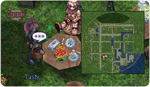
- You will need to look for a Broken Beta (on the same map) and get 1
 Automatic Doll Communication Chip.
Automatic Doll Communication Chip. - Return to Tasty and talk to her. You will be rewarded with 5 Varmeal Tickets.
- Go to the next Repeater at and talk to it. You will be rewarded with 5 Varmeal Tickets.
- 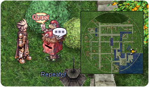
- Walk near Gaduli to progress. You will be rewarded with 5 Varmeal Tickets.
- 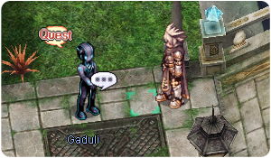
- Return to Mansion Manager Alpha and speak to her. You will be rewarded with 15 Varmeal Tickets.
You have unlocked the Supply and Demand for Reserve Parts daily quest. - You can continue the main quest with The Hidden Story.
The Hidden Story
| Requirements | |
|---|---|
| Base Level: | 130 |
| Starting Point: | |
| Prerequisite(s): | Relay Network Repairs |
| Rewards | |
| Experience: | - (Base) and - (Job) |
| Items: | 35 Varmeal Tickets
|
- Talk with Philofontes at the Teahouse. The Teahouse is located at . They do not trust Philofontes's documents.
- Speak with Dien next. To get a neutral point of view, you'll have to talk with the automatic dolls of the Mansion yourself.
- Talk to Yunas at .
- Talk to Adoren at .
- Talk to Skippy at .
- Talk to Cleaning Robot at .
- Talk to High High at .
- Return to the Teahouse and speak with Lucky. Select Evidence of communication with enterprises.
- Speak with Ridsh next.
- Speak with Kaya Toss.
- Speak with Lucky again.
- Meet with Kaya Toss outside and talk to him.
- 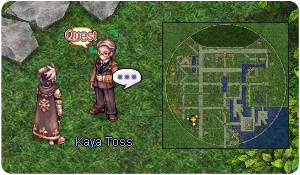
- Speak with Dien next to him (if Dien doesn't show up, talk to Kaya Toss again).
- Speak with Kaya Toss again. You will be rewarded with 15 Varmeal Tickets.
- Talk with Tatio at the Teahouse. You will be rewarded with 20 Varmeal Tickets.
- You can continue the main quest with Tracking Illusion.

Tracking Illusion
| Requirements | |
|---|---|
| Base Level: | 130 |
| Starting Point: | |
| Prerequisite(s): | Relay Network Repairs |
| Rewards | |
| Experience: | - (Base) and - (Job) |
| Items: | 35 Varmeal Tickets
|
- Meet with Lucky right outside outside the Teahouse.
- 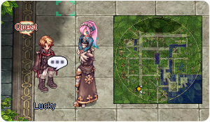
- Look for 5 Manager Betas around the Mansion. The locations can be found on the minimap below:
- Meet with Elena Bolkova at . You will receive 10 Varmeal Tickets.
- Go to the guests' rooms at the top left of the Mansion area, near .
- Once inside, speak with Rebellion to enter the guarded room.
- 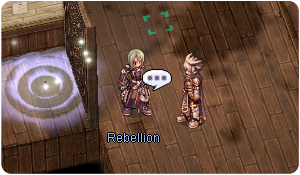
- Speak with Elena Bolkova. You will need to get the following items:
- Return to Elyumina inside the room . You will be rewarded with 10 Varmeal Tickets.
- Speak with Erst outside of the room .
- 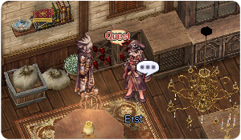
- Talk to her again to start the Twilight Garden instance.
- Once inside, talk to Erst at the entrance.
- Move to the right and a cutscene will trigger. Kill the Heart Hunters and then talk to Erst.
- Move to the next location . Kill the Heart Hunters.
- Talk to Erst.
- Talk to Amanda and follow her. Talk to her again once she stops walking.
- Defeat the Heart Hunters and then talk to the Intruder.
- Defeat the Heart Hunter Commanders.
- Talk to Amanda and follow her. Talk to her again once she stops walking and watch the cutscene.
- Talk to the Intruder again, next to the Repeater.
- Go back up a little and talk to Amanda, follow her.
- Talk to Erst.
- Move to the Hangar to the middle left side area .
- Once inside, approach Faulty and a cutscene will trigger.
- Defeat him.
- You can leave the area with the left portal.
- Speak with Erst outside of the room again .
- You can now enter the real Hangar area .
- Once inside, speak with Smart Ellie . You'll be rewarded with 15 Varmeal Tickets.
You have unlocked the Hey! Sweety! daily instance along with 2 of its daily quests. - When you leave the Hangar area, Philofontes and Crux will appear.
- Talk to Crux.
Note: If you chose to depart later, Crux will appear in the guests' room, at . - Once you get warped to the Prontera Castle, a dialogue will trigger for Nyhill's coronation.
- Move to the room below and speak with Nyhill.
You have now finished Sage's Legacy (17.2) main story quest.
You can now use Ep. 17 Storybook on another character.
Ep. 17 Storybook on another character.


Silence in the Library!
| Requirements | |
|---|---|
| Base Level: | 130 |
| Starting Point: | |
| Prerequisite(s): | Gaining access to Varmundt's Mansion |
| Rewards | |
| Experience: | 4,297,233 (Base) |
| Items: | 5 Varmeal Tickets
|
- Talk with Tamarin at .
- Click on the Fountain NPC at and let Dew wash himself.
- Head to the Library at .
- Go near the portal to trigger a cutscene, in the Library. You'll get warped in the next area.
- 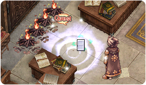
- Speak with Library Manager Beta at the entrance.
- 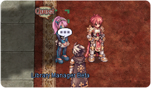
- Go and watch the cutscenes at these 5 locations (marked on your minimap):
- Mark at .
- Tamarin at .
- Maggie at .
- Oliver at .
- Alp at .
- Return to Library Manager Beta. You'll get 5 Varmeal Tickets with some experience.
You have unlocked the Ultimate Bookworm daily quest.
You have unlocked the Ultimate Book Organization daily quest.
You have unlocked the Guardian Parts Cleanup daily quest.

Bathroom Monster
| Requirements | |
|---|---|
| Base Level: | 130 |
| Starting Point: | |
| Prerequisite(s): | Gaining access to Varmundt's Mansion |
| Rewards | |
| Experience: | - (Base) |
| Items: | 30 Varmeal Tickets
|
- Speak with Sinsa at .
- 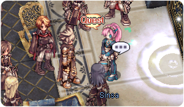
- Go inside the Meditatio Bath floor with the portal above.
- Speak with Sinsa again at .
- Head to the Boiler room and speak with Boiler at . You'll be rewarded with 7 Varmeal Tickets.
- 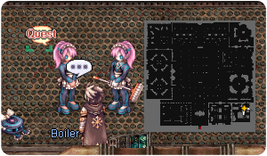
- Go meet with "Lucky" at , he tells you to go to the lake.
- Return to Sinsa at the entrance of the map and speak to her. It was a fake Lucky...!
- Talk with Lucky again at and watch the cutscene. You'll need to set up traps with the 4
 Ice Trap. You'll be rewarded with 7 Varmeal Tickets.
Ice Trap. You'll be rewarded with 7 Varmeal Tickets. - The first trap is at .
- The second trap is at .
- The third trap is at .
- The fourth trap is at .
- Move near and speak with the Monster.
- Speak with the creature again.
- Speak with the creature yet again. This time you'll be rewarded 16 Varmeal Tickets and some experience.
You have unlocked the Help With Hard Work daily quest.
You have unlocked the Bathhouse Cleaning daily quest.


Water Garden
| Requirements | |
|---|---|
| Base Level: | 130 |
| Starting Point: | |
| Prerequisite(s): | Gaining access to Varmundt's Mansion |
| Rewards | |
| Experience: | - (Base) and - (Job) |
| Items: | 20 Varmeal Tickets
|
- Talk with Lensize at the Sewage Treatment Plant .
- 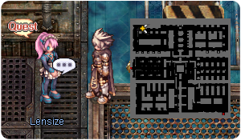
- Talk with Need at .
- Talk with Sayhu at .
- Talk with Harad right below Sayhu to generate the Water Garden instance. For more information on the instance, visit the guide over here.
- Once you've killed a Silva Papilla, speak with Sayhu.
- Then speak with Elyumina above, you'll be rewarded with 20 Varmeal Tickets and some experience.
You have unlocked the Water Garden instance with its 3 daily quests that you can get from Sayhu.


Checking the Underground Condition
| Requirements | |
|---|---|
| Base Level: | 160 |
| Starting Point: | |
| Prerequisite(s): | Gaining access to Varmundt's Mansion |
| Rewards | |
| Experience: | - (Base) and - (Job) |
| Items: | 15 Varmeal Tickets
|
- Talk with Chirp inside the Tartaros' Warehouse .
- Hunt down 5 Broken Cleaning Robots (they are found on the same map).
- Return to Chirp and talk with her. You'll get 3 Varmeal Tickets.
- Investigate the Lock at the top right corner of the map, near .
- 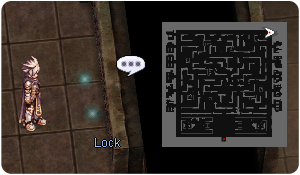
- Return to Chirp one more time, you'll get 3 Varmeal Tickets.
- Investigate these three locations (marked on your minimap) and you'll get 1 Emergency Key:
- The first Emergency Key is at .
- The second Emergency Key is at .
- The third Emergency Key is at .
- Return to the Lock at the top right, you will be warped one floor below.
You have now gained access to the basement of the Tartaros' Warehouse. - Talk to the Head on the left side of the room, near .
- Go through the pile of Junk at for a body and you'll get Automatic Doll Parts.
- 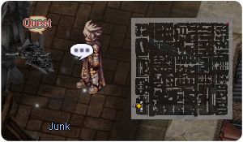
- Go through the pile of Junk at for an arm and you'll get Automatic Doll Parts.
- Go through the pile of Junk at for legs and you'll get Automatic Doll Parts.
- Go back to the Head at the top left corner and assemble the body. You will get 3 Varmeal Tickets as a reward.
- Talk to Chirp back on the first storage floor , you'll get 6 Varmeal Tickets and some experience.
You have unlocked the First Warehouse Floor Cleanup daily quest.
You have unlocked the Underground Warehouse Cleanup daily quest.


Varmundt's Mansion Daily Quests
Potato Chips (Eorpa's Request)
| Requirements | |
|---|---|
| Base Level: | 180 |
| Starting Point: | |
| Prerequisite(s): | Gaining access to Varmundt's Mansion |
| Rewards | |
| Experience: | 155,921,550 (Base) and 109,145,075 (Job) |
| Items: | 1 Varmeal Ticket
|
- Speak with Eorpa at .
- You will need to hunt Magic Poison Sanare in the Second Power Plant area (ba_pw03). The mobs have a chance to drop a Potato Chip.
- Once you have gathered 10, return to Eorpa for 1 Varmeal Ticket and some experience.
Sewage Treatment Plant Cleanup
| Requirements | |
|---|---|
| Base Level: | 130 |
| Starting Point: | |
| Prerequisite(s): | Gaining access to Varmundt's Mansion |
| Rewards | |
| Experience: | 126,634,200 (Base) and 88,643,940 (Job) |
| Items: | 2 Varmeal Tickets
|
- Speak with Cleaner Omega at .
- You will need to hunt the following monsters in the Sewage Treatment Plant (ba_pw02):
- 44 Sewage Venenums
- 44 Sewage Cramps
- 44 Sewage Waterfalls
- Return to Cleaner Omega for 2 Varmeal Tickets and some experience.
First Power Plant Cleanup
| Requirements | |
|---|---|
| Base Level: | 130 |
| Starting Point: | |
| Prerequisite(s): | Gaining access to Varmundt's Mansion |
| Rewards | |
| Experience: | 126,634,200 (Base) and 88,643,940 (Job) |
| Items: | 2 Varmeal Tickets
|
- Speak with Cleaner Omega at .
- You will need to hunt the following monsters in the First Power Plant (ba_pw01):
- 44 Elite Bellares
- 44 Magical Dolors
- 44 Unleashed Magics
- Return to Cleaner Omega for 2 Varmeal Tickets and some experience.
Playing with Pitayas
| Requirements | |
|---|---|
| Base Level: | 130 |
| Starting Point: | |
| Prerequisite(s): | Gaining access to Varmundt's Mansion |
| Rewards | |
| Experience: | - (Base) and - (Job) |
| Items: | 2 Varmeal Tickets
|
- Speak with Silk at .
- You will need to hunt 20 Pitayas of the requested color in the Lost Valley (ba_lost).
- Return to Silk for 2 Varmeal Tickets and some experience.
Lost in Time
| Requirements | |
|---|---|
| Base Level: | 130 |
| Starting Point: | |
| Prerequisite(s): | Gaining access to Varmundt's Mansion, step 11 |
| Rewards | |
| Experience: | 12,891,725 (Base) and 9,024,200 (Job) |
| Items: | Quest: 20 Varmeal Tickets
Daily: 6 |
- Speak with Silk at to create the instance and talk to her again to enter.
- You can continue this quest by looking the guide for Lost in Time.
- Return to Ruinan for 20 Varmeal Ticket and some experience. If you are doing the daily quest of this instance, you will only get 6 Varmeal Ticket.
First Warehouse Floor Cleanup
| Requirements | |
|---|---|
| Base Level: | 160 |
| Starting Point: | |
| Prerequisite(s): | Checking the Underground Condition |
| Rewards | |
| Experience: | 110,777,700 (Base) and 77,544,400 (Job) |
| Items: | 1 Varmeal Ticket
|
- Speak with Chirp at .
- You will need to hunt 20 Hard Skirmishers.
- Return to Chirp for 1 Varmeal Ticket and some experience.
Underground Warehouse Cleanup
| Requirements | |
|---|---|
| Base Level: | 160 |
| Starting Point: | |
| Prerequisite(s): | Checking the Underground Condition |
| Rewards | |
| Experience: | 149,363,500 (Base) and 104,554,450 (Job) |
| Items: | 1 Varmeal Ticket
|
- Speak with Chirp at .
- You will need to hunt 20 Broken Warehouse Managers.
- Return to Chirp for 1 Varmeal Ticket and some experience.
Ultimate Bookworm
| Requirements | |
|---|---|
| Base Level: | 130 |
| Starting Point: | |
| Prerequisite(s): | Silence in the Library! |
| Rewards | |
| Experience: | 22,751,000 (Base) and 15,926,000 (Job) |
| Items: | 2 Varmeal Ticket
|
- Speak with Library Manager Beta at .
- You will need to hunt 20 Bookworms.
- Return to Chirp for 2 Varmeal Tickets and some experience.
Ultimate Book Organization
| Requirements | |
|---|---|
| Base Level: | 130 |
| Starting Point: | |
| Prerequisite(s): | Silence in the Library! |
| Rewards | |
| Experience: | 23,350,000 (Base) and 16,345,000 (Job) |
| Items: | 2 Varmeal Ticket
|
- Speak with Library Manager Beta at .
- You will need to hunt 20 Bookworms.
- Return to Chirp for 2 Varmeal Tickets and some experience.
Guardian Parts Cleanup
| Requirements | |
|---|---|
| Base Level: | 130 |
| Starting Point: | |
| Prerequisite(s): | Silence in the Library! |
| Rewards | |
| Experience: | 12,500,000 (Base) and 7,500,000 (Job) |
| Items: | 2 Varmeal Tickets
|
- Speak with Tamarin at .
- You will need to clear 20 Guardian Parts within Varmundt's Mansion.
- Return to Tamarin for 2 Varmeal Tickets and some experience.
Help With Hard Work
| Requirements | |
|---|---|
| Base Level: | 130 |
| Starting Point: | |
| Prerequisite(s): | Bathroom Monster |
| Rewards | |
| Experience: | 12,500,000 (Base) and 7,500,000 (Job) |
| Items: | 2 Varmeal Tickets 1 Bath Bomb
|
- Speak with Boiler at .
- You will need to hunt these monsters:
- 10 Beta Cleaner A
- 10 Beta Cleaner B
- You will also need to collect 5
 Broken Automatic Doll Parts.
Broken Automatic Doll Parts. - Return to Boiler for 2 Varmeal Tickets, 1 Bath Bomb and some experience.
Bathhouse Cleanup
| Requirements | |
|---|---|
| Base Level: | 130 |
| Starting Point: | |
| Prerequisite(s): | Bathroom Monster |
| Rewards | |
| Experience: | 12,500,000 (Base) and 7,500,000 (Job) |
| Items: | 2 Varmeal Tickets
|
- Speak with Sweep at .
- You will need to hunt:
- 15 Boiled Water Marcs
- 15 Boiled Water Piranhas
- Return to Boiler for 2 Varmeal Tickets and some experience.
Supply and Demand for Reserve Parts
| Requirements | |
|---|---|
| Base Level: | 130 |
| Starting Point: | |
| Prerequisite(s): | Relay Network Repairs |
| Rewards | |
| Experience: | 12,500,000 (Base) and 7,500,000 (Job) |
| Items: | 2 Varmeal Tickets
|
- Speak with Mansion Manager Alpha at .
- You will need to hunt Broken Betas in Varmundt's Mansion. They have a chance to drop 1 Automatic Doll Communication Chip while the quest is active.
- Return to Mansion Manager Alpha for 2 Varmeal Tickets and some experience.
Instances
Automatic Equipment
Main article: Automatic Armors
Sin Weapons
Main article: Sin Weapons